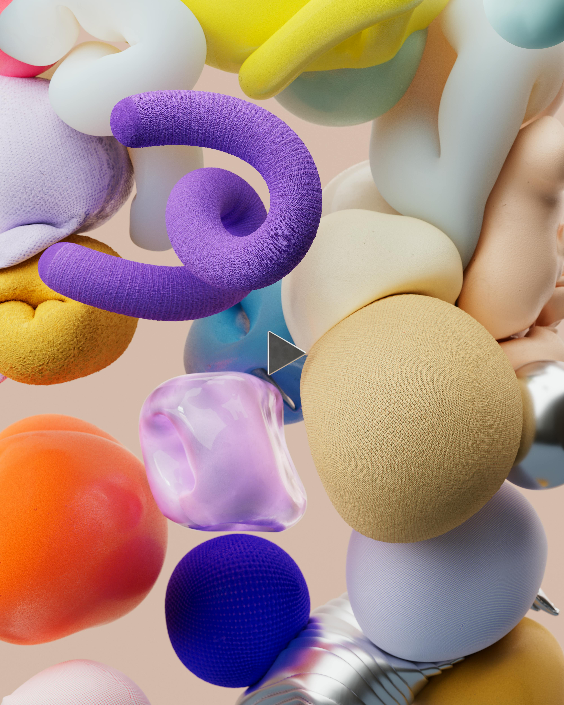
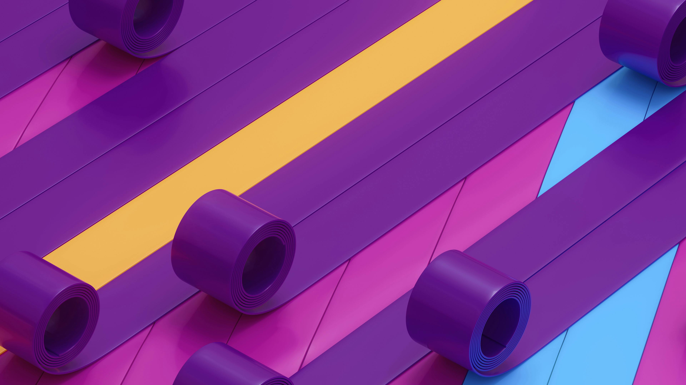
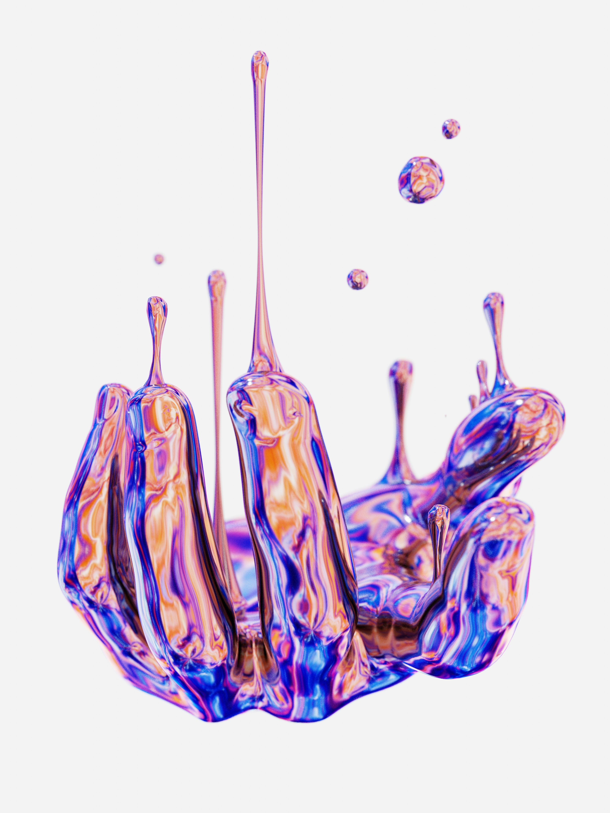
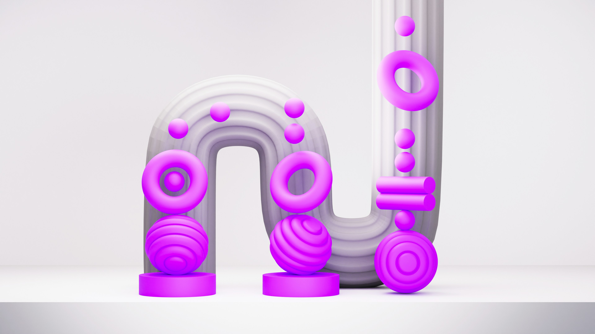
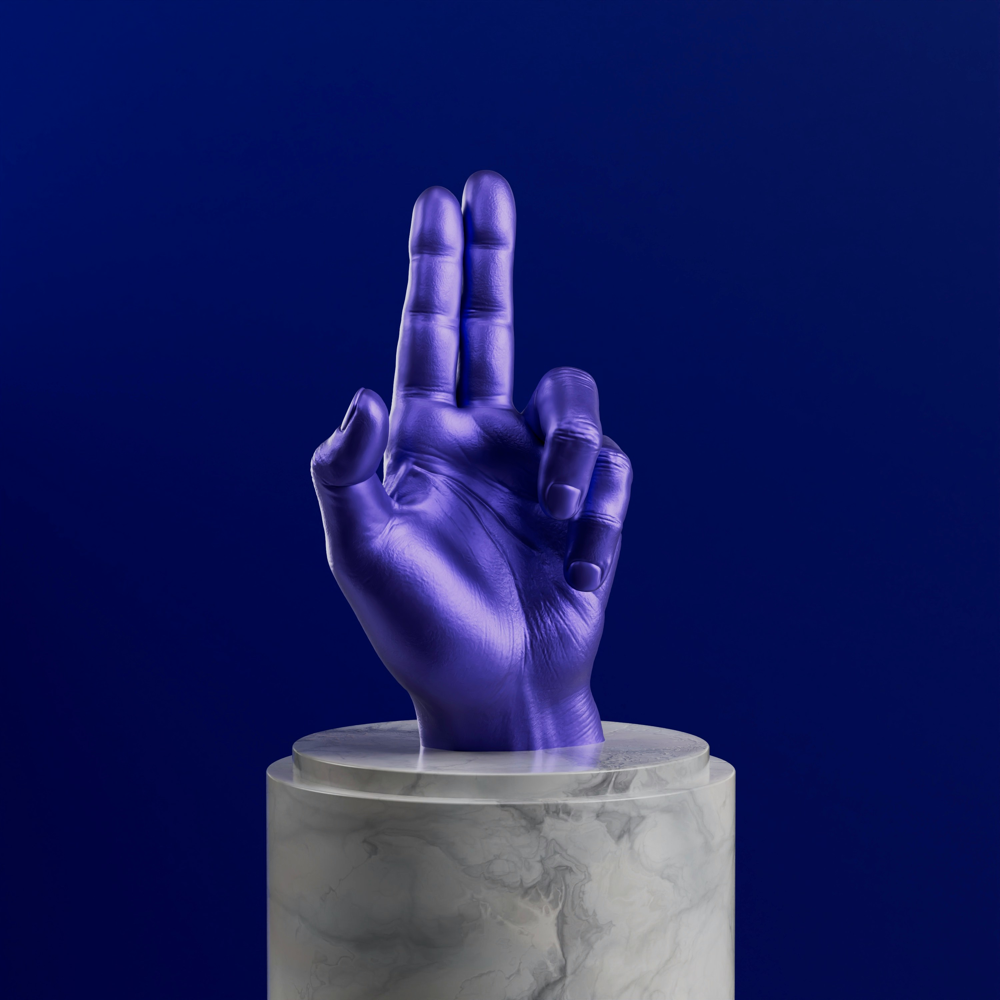
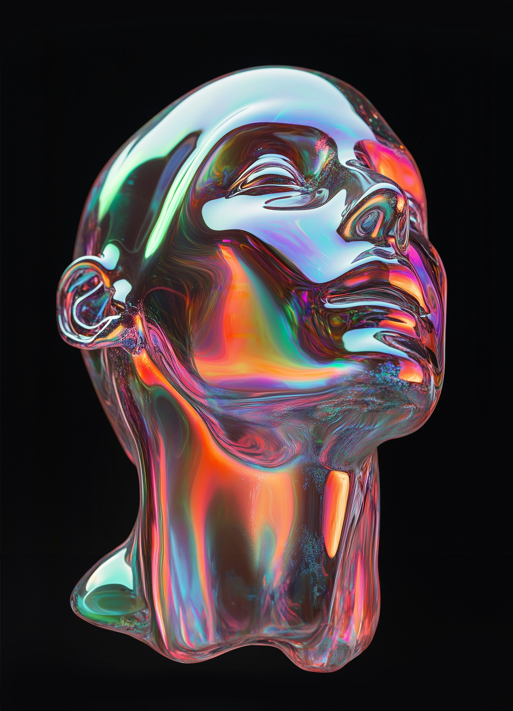
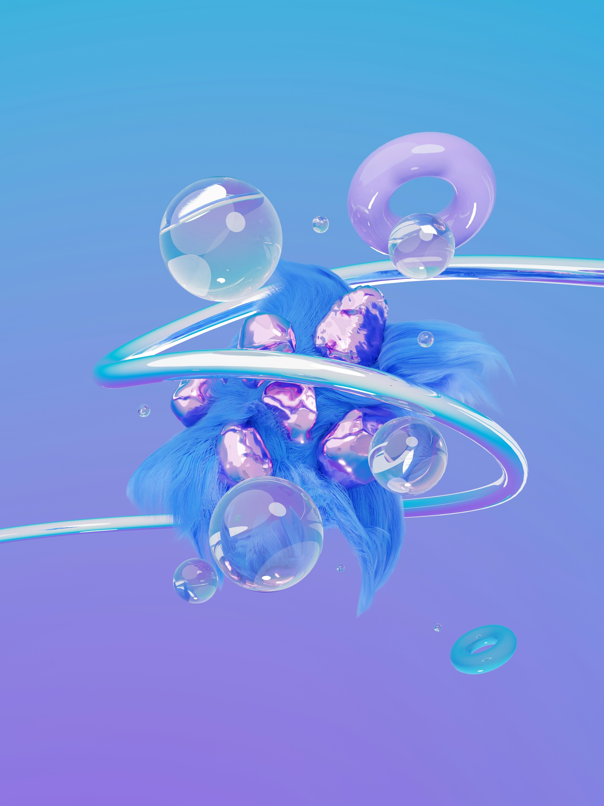
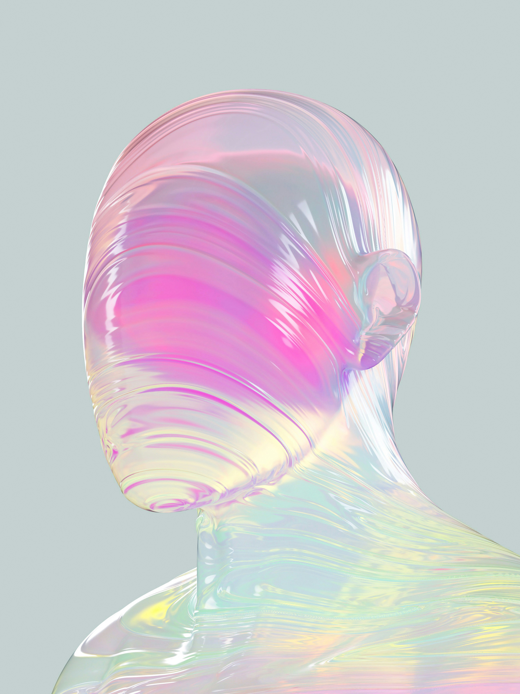
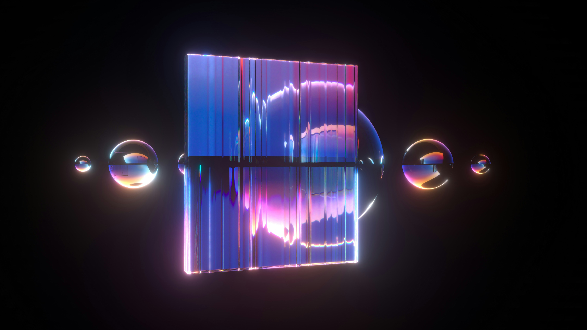

YouTube Video Editing
Retention-focused long-form edit with pacing and polish.
3-6 days
Creative Services
Each service includes clear scope, delivery timing, and professional export settings. We turn your raw footage into cinematic masterpieces.
Retention-focused long-form edit with pacing and polish.
3-6 days
Hooks, captions, beat cuts, and vertical exports.
24-72 hours
Titles, callouts, logo reveals, and animated explainers.
4-8 days
Clean brand videos, interviews, and internal communications.
5-8 days
Fast persuasive ads for products and campaigns.
2-5 days
Audio cleanup, video sync, clips, and social cutdowns.
2-4 days
Emotional ceremony, speeches, and highlight storytelling.
7-14 days
Batch social clips for creators and brands.
48 hours+
Balanced color correction and cinematic grade.
1-3 days
Service detail
The edit is not just cutting footage. Each service includes asset review, story direction, sound cleanup, color correction, motion graphics where needed, and exports for the right platform.
Timestamped review links keep every note clear, visible, and easy to approve.
Platform-ready files are checked, named, and organized for immediate upload.
Add-on services

Readable subtitles with emphasis words, emojis, and platform-safe styling.

Exported stills and layout suggestions for stronger video presentation.

Lower thirds, intros, callouts, and brand transitions for future videos.
Skills & Technical Depth
We blend technical precision with creative storytelling using industry-standard tools to craft top-tier video projects.
Retention-focused editing pipeline. We frame dialogue pacing, clip integration, multi-camera syncing, and narrative structures into premium visual narratives.
After Effects integrations. Intros, kinetic titles, tracking callouts, and bespoke branding.
DaVinci Resolve suites. LUT calibrations, shot-matching, correcting contrast and white balances.
Advanced auditory soundscapes & compositing. Dynamic noise isolation, seamless background cues, cinematic whooshes, keying green screen, and removing frame blemishes.
Creative Workflow
A highly structured collaborative roadmap designed to move your footage from rough drafts to polished masterpieces.
Before putting scissors to the timeline, we construct a rigorous creative blueprint. We analyze the script, review style references, ingest raw footage folders, transcode high-resolution files into responsive proxies, and synchronize multi-camera audio tracks. This systematic preparation lays a solid foundation that prevents workflow lag and guarantees a highly coordinated post-production lifecycle from the very first cut.

We assemble the narrative spine of the edit, pacing sections for peak viewer retention, balancing audio levels, and refining dialog. A secure web link is delivered for frame-precise collaborative client feedback.

Once the story is locked, we color-grade, apply motion overlays, overlay custom sound effects, and compile a final delivery package optimized for all social platforms and broadcast requirements.

Client Preparation Guides
A few proactive steps before sending your files can dramatically cut editing timelines and elevate final output quality.

Proper file organization saves hours of sorting. Sorting A-Roll, B-Roll, and assets systematically helps us dive straight into editing your story.

Audio is half of the viewing experience. High-quality dialogue recording ensures that voices sound crisp and clear on any speakers.

To keep revisions smooth and transparent, specify clear visual benchmarks, target runtimes, and compile timecode notes in a single list.
Motion Animation
We build professional kinetic assets, fluid transitions, and UI explainers to give your videos a distinct brand aesthetic.
Static videos struggle to hold attention in busy social feeds. Our custom-designed motion graphics align with your brand, driving higher engagement and visual clarity.
From animated graphs for explainers to signature transitions and stylized captions, we engineer each asset to keep your viewers hooked frame after frame.
Request custom motion brief
Retention-focused text with accent colors, emoji integration, and platform-safe bounds.

Interactive charts, clean screen tracking cues, callouts, and bespoke infographics.
Sleek introductory animations, lower thirds, and smooth transitions built into templates.
Digital Products & Resources
Download our creator-tested sound packs, design assets, and framing templates to accelerate your self-editing pipeline.
Accelerate your vertical editing workflow. High-retention subtitle presets optimized for mobile ratios, easily customizable in Premiere Pro & AE.

Punch up your visuals with bespoke sound. Includes subtle whooshes, ambient textures, retro click cues, and impact hits mastered for social media platforms.
First impressions count. Clean thumbnail frames, text contrast plates, and platform safe-zone overlays built to scale your CTR metrics.